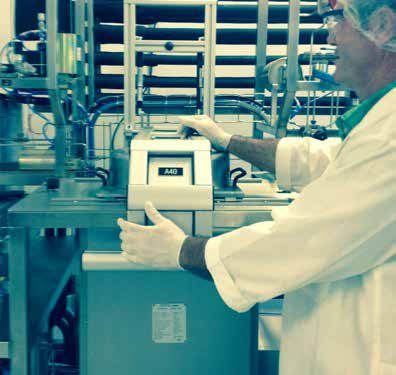
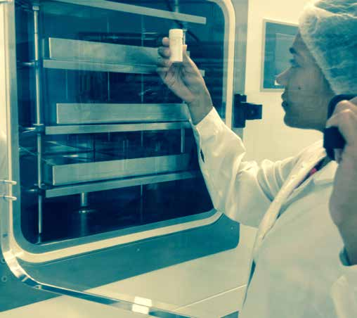

NatureXtracts offers cutting-edge green chemistry and custom biomanufacturing solutions designed to extract and preserve high-value compounds from natural matrices.

Providing custom, flexible manufacturing scale-up and process integration to meet the specific requirements of the food, cosmetic, and pharmaceutical industries.
The high flexibility of our modern equipment makes it possible to completely customize production to fit your exact demands.
This allows NatureXtracts to produce your exclusive essential oils, oligosaccharides, hydrolats, and specialized lipid or water-based extracts under strict confidentiality and regulatory compliance.

Differentiating features of our advanced plant extraction and processing plant.

Innovative, high-pressure extraction under total oxygen absence. Sterile, solvent-free, and preservation-free premium extracts.

Dehydration technique operating close to vacuum, enabling sublimation of water to protect temperature-sensitive biomolecules.

Equipped with HPLC, GC, and UV/VIS spectroscopy for precise active compound detection, reproducibility, and compliance.